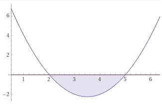

Aufgabe 44 Bestimmen Sie die Lösungsmenge der Ungleichung für x ∈ ℝ: x² - 7x + 10 < 0 (x - 5)(x - 2) < 0 (x - 5)(x - 2) ist kleiner 0, wenn x - 5 > 0 --> x > 5 x - 2 < 0 --> x < 2 L1 = x > 5 ∩ x < 2 = ∅ oder wenn x - 5 < 0 --> x < 5 x - 2 > 0 --> x > 2 L2 = x < 5 ∩ x > 2 = 2 < x < 5 L = L1 ∪ L2 = ∅ ∪ 2 < x < 5 L = 2 < x < 5 